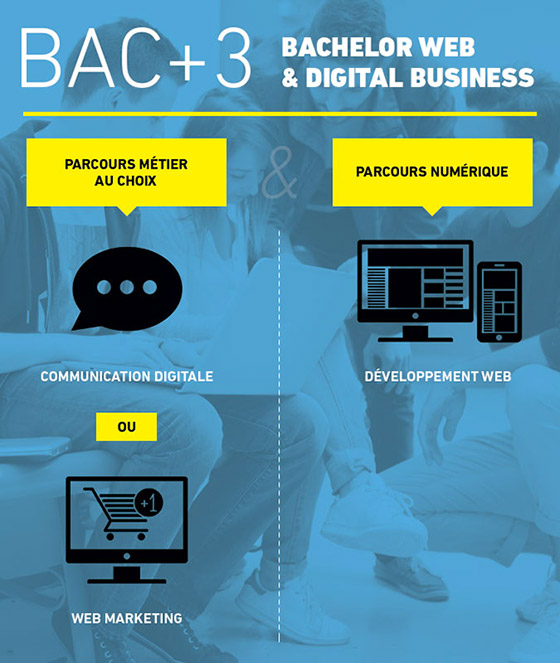

WIS

WIS EST LA PREMIÈRE FORMATION AUX MÉTIERS DU WEB À LA FOIS PLURIDISCIPLINAIRE ET PLURI-TECHNOLOGIQUE.
WIS prépare aux métiers du web et du digital business. La formation combine des enseignements qui reposent sur 3 approches :
La communication, le marketing et la technique
Le tout encadré par l’approche méthodes et projets. Cette pluridisciplinarité nous permet de former des professionnels capables d’assurer la conception, la réalisation et le management de projets web complexes. C’est la maîtrise de cette combinaison qui a fait le succès des entreprises numériques, starts-up et pure players en forte croissance partout dans le monde.

WIS prépare aux métiers du web et du digital business. La formation combine des enseignements qui reposent sur 3 approches :
La communication, le marketing et la technique
Le tout encadré par l’approche méthodes et projets. Cette pluridisciplinarité nous permet de former des professionnels capables d’assurer la conception, la réalisation et le management de projets web complexes. C’est la maîtrise de cette combinaison qui a fait le succès des entreprises numériques, starts-up et pure players en forte croissance partout dans le monde.
L’école web & Digital Business
La transformation digitale apparaît aujourd’hui comme une évidence. Le numérique a pris le contrôle de tous les secteurs d’innovation des industries et des services.
“Dans ce contexte, WIS se donne pour mission de former des professionnels du web et du digital, capables d’accompagner le développement des compétences des entreprises, de mener à bien la digitalisation des processus-métiers, d’assurer la transformation digitale des organisations, en France et à l’International.
Fort du succès du Bachelor « Web et digital Business », et à la demande de nos partenaires entreprises, nous vous proposons un programme Bac +4/+5 « Expertise Digital Business ». En renforçant l’axe international et en mettant l’accent sur la double compétence menant à l’acquisition d’un double diplôme, il formera des managers opérationnels aux métiers du digital.”
Xavier TOSTIVINT Directeur du Réseau WIS
La transformation digitale apparaît aujourd’hui comme une évidence. Le numérique a pris le contrôle de tous les secteurs d’innovation des industries et des services.
“Dans ce contexte, WIS se donne pour mission de former des professionnels du web et du digital, capables d’accompagner le développement des compétences des entreprises, de mener à bien la digitalisation des processus-métiers, d’assurer la transformation digitale des organisations, en France et à l’International.
Fort du succès du Bachelor « Web et digital Business », et à la demande de nos partenaires entreprises, nous vous proposons un programme Bac +4/+5 « Expertise Digital Business ». En renforçant l’axe international et en mettant l’accent sur la double compétence menant à l’acquisition d’un double diplôme, il formera des managers opérationnels aux métiers du digital.”
Xavier TOSTIVINT Directeur du Réseau WIS

© Copyrights Hamel/Noppe/Vittu/Layti/Hadoun. Tous droits Réservés
Créé durant le Workshop EPSI/WIS 2018-2019.